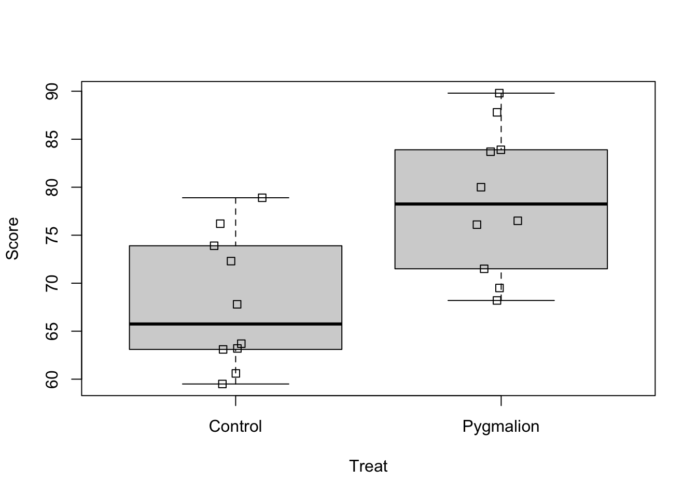
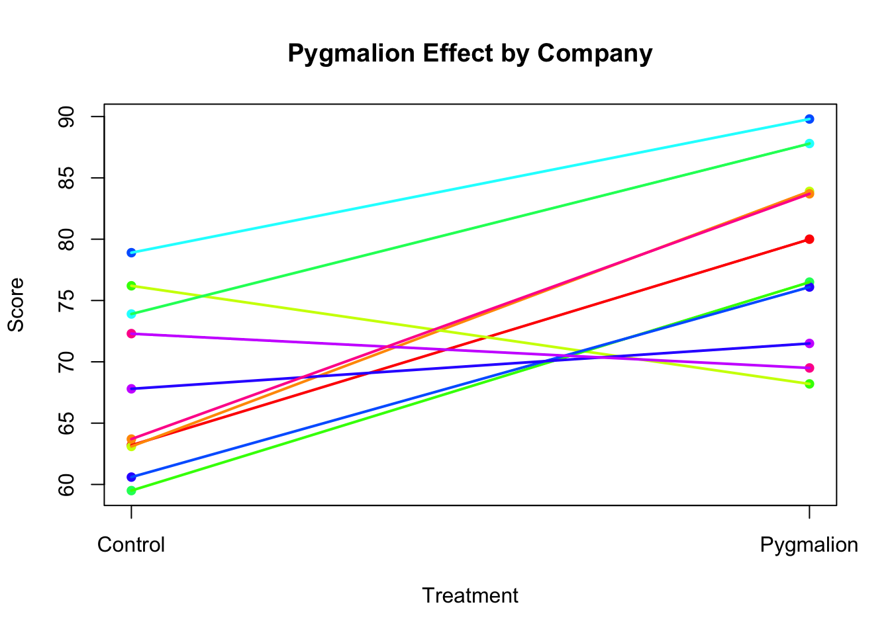
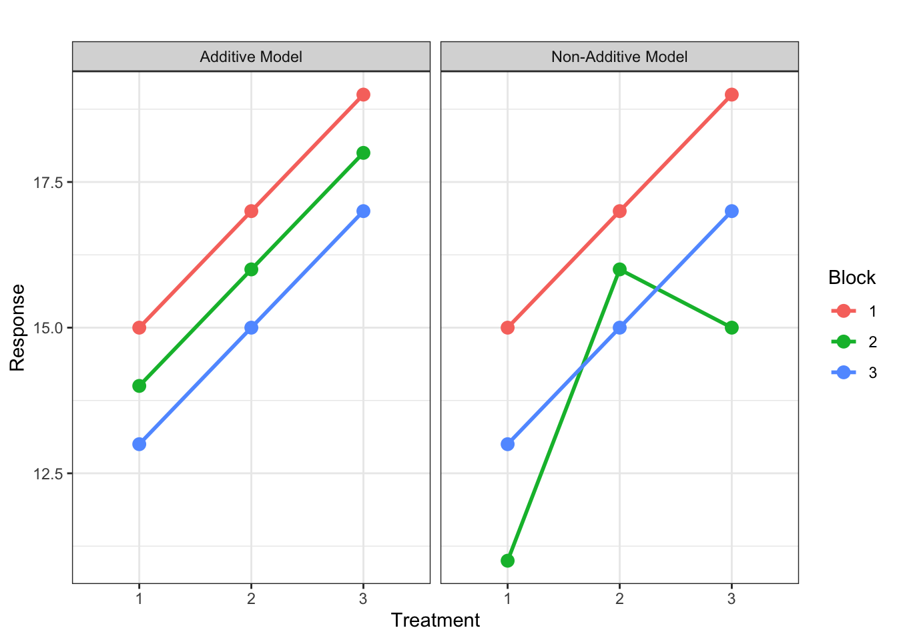

Data from randomised block designs are analysed with two-way ANOVAs. The assumptions of a two-way ANOVA are the same as a one-way. That is,
Equal population variance.
Normal errors.
Independent errors.
No outliers.
With the addition of a block variable comes a new assumption:
The effects of the blocks and treatments are additive.
Simply put, it means that the we assume the treatment effects are similar in all blocks. That if a treatment is applied in one block, the effect is the same as in another block. For example, if we applied had a treatment factor: marketing strategy with two treatments A and B, and we want to apply it to stores in different economic regions (blocks), the effect of, for example, marketing strategy A should be the same in both regions. We will check this assumption visually as well. One way, is to plot the response against the block for each treatment. But first! Some exploratory data analysis.
# read in data pyg_data <-read.csv("pygmalion_data.csv")# look at first and last few rows head(pyg_data); tail(pyg_data)
Company Treat Score
1 C1 Pygmalion 80.0
2 C1 Control 63.2
3 C2 Pygmalion 83.9
4 C2 Control 63.1
5 C3 Pygmalion 68.2
6 C3 Control 76.2
Company Treat Score
15 C8 Pygmalion 71.5
16 C8 Control 67.8
17 C9 Pygmalion 69.5
18 C9 Control 72.3
19 C10 Pygmalion 83.7
20 C10 Control 63.7
summary(pyg_data)
Company Treat Score
Length:20 Length:20 Min. :59.50
Class :character Class :character 1st Qu.:66.78
Mode :character Mode :character Median :73.10
Mean :73.31
3rd Qu.:79.17
Max. :89.80
Ah! We need to convert both the company and Treat variable to factors.
Company Treat Score
C1 :2 Control :10 Min. :59.50
C10 :2 Pygmalion:10 1st Qu.:66.78
C2 :2 Median :73.10
C3 :2 Mean :73.31
C4 :2 3rd Qu.:79.17
C5 :2 Max. :89.80
(Other):8
Nice, now we can see that we had ten replicates per treatment, two observations per block which means 20 observations in total. Let’s go ahead and check the the first four assumptions.
boxplot(Score~Treat, data = pyg_data)stripchart(Score~Treat, data = pyg_data, add =TRUE, vertical =TRUE, method ="jitter", jitter =0.1)

Okay, the boxplots look relatively symmetric, there are no clear signs of non-normality. They also look very similar in terms of height, the assumption of homogeneity seems reasonable as well. Let’s have a look at the sample standard deviations.
sd(pyg_data$Score[pyg_data$Treat =="Pygmalion"])
[1] 7.587124
sd(pyg_data$Score[pyg_data$Treat =="Control"])
[1] 6.927209
Then, we need to check the independence assumption. This is often the hardest assumption to verify because it requires knowledge about how the data were collected. In practice, you will need to assess independence in one of two ways:
Before conducting an experiment – Ideally, you would discuss the study design with the researchers before data collection to ensure that independence is maintained.
When analyzing existing data – If you are reviewing a published study, you must rely on the authors’ description of the experimental setup to determine whether independence is reasonable.
In this study, the researchers assumed platoons operated independently and took steps to prevent treatment contamination:
Randomization ensured that each platoon was independently assigned to the Pygmalion or control condition, reducing bias.
Leaders were instructed not to discuss their treatment condition, preventing expectation spillover.
Each platoon was analyzed separately, ensuring observations within treatments were treated as independent.
After fitting the model, and assuming the order in which the response was measured is the order in which it appears in the data set, we can check for any pattern in the residuals that may indicate dependence.
Now, let’s check the new assumption of additivity. We can plot the response against treatment and add colour-coded lines connecting the experimental units from the same block. This is a bit tedious to do with base R (don’t worry, we won’t expect you to code this manually) but you have to understand and interpret the plot it produces.
Code
# Ensure Treat is a factor with proper orderpyg_data$Treat <-factor(pyg_data$Treat, levels =c("Control", "Pygmalion"))# Convert Treat to numeric for plotting (1 = Control, 2 = Pygmalion)pyg_data$Treat_numeric <-as.numeric(pyg_data$Treat)# Define colors for companiescompany_colors <-rainbow(length(unique(pyg_data$Company)))names(company_colors) <-unique(pyg_data$Company)# Create base plotplot(pyg_data$Treat_numeric, pyg_data$Score, xlab ="Treatment", ylab ="Score", main ="Pygmalion Effect by Company",pch =16, col = company_colors[pyg_data$Company], xaxt ="n")# Add custom x-axis labelsaxis(1, at =c(1, 2), labels =c("Control", "Pygmalion"))# Add lines connecting observations from the same companyfor(block inunique(pyg_data$Company)){ temp <- pyg_data[pyg_data$Company == block, ] temp <- temp[order(temp$Treat_numeric), ] # Order by treatment for correct line drawinglines(temp$Treat_numeric, temp$Score, col = company_colors[block], lwd =2)}

If the assumption of additivity is met, we would expect relatively few lines to cross, i.e. we would expect mostly parallel lines. In the plot above, it seems that for most blocks, a low value in the control treatment is associated with a high value in the Pygmalion treatment. There are three lines (i.e. companies) that don’t conform to this pattern, where it seems that Pygmalion treatment did not alter the scores or maybe even caused a reduction. It’s important to remember that sampling variability prevents us from observing perfectly parallel lines in practice. The observed treatment means are always subject to random variation, which can introduce some deviations from the expected pattern.
What happens if this assumption is wrong, i.e. the blocking and treatment factors do interact? That is the treatment effect depends on which block it is in. Consider the following plots depicting an experiment with three treatments and three blocks. The first panel shows an example where treatments and blocks are additive – the lines connecting the same treatment in all blocks are parallel. Due to variability, we would of course never actually observe such parallel lines. In reality, the observed treatment means would be subject to random deviations from the true population means, and with lots of variability, the lines could cross and look more like the second panel, which is showing an example where the additivity assumption is violated.

With only one experimental unit per treatment in each block, as in a typical randomised complete block design, it is difficult to know which situation we have: the additivity assumption is violated, or there is simply a lot of random error. The interaction effect between treatment and block is confounded with the random error term. That is, \(e_{ij}\) in the model equation is actually the sum of the interaction effect and the random error. So if the additivity assumption is violated, \(e_{ij}\) is inflated and it will be harder to find differences between treatments.
With some replication of treatments within blocks, as in generalised randomised complete block designs (which we don’t cover here), we can separately estimate the interaction effects. This is similar to what we will see when we talk about Factorial Experiment sin the next section.